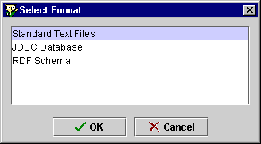
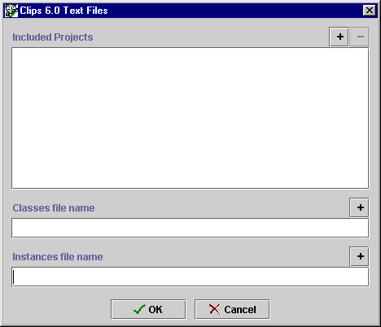
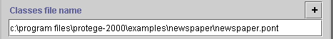
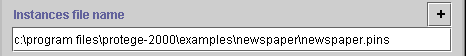

Importing Text
Files
Importing Text
Files

To import a Protégé-2000 project from text files:
- Select Import Project... from the Project
menu.
- Select Standard Text Files from the Select Format dialog box and
click OK.

-
A Text Files dialog box is displayed.

- If you wish to include any existing Protégé-2000 projects in the project
you are building, click the
 button to the right of the Included Projects line and select your
project. See Including a Project for
more information.
button to the right of the Included Projects line and select your
project. See Including a Project for
more information.
- Enter the location and name of the text file that contains
the class information in the Classes file name line. Normally, this
will be a file with the extension .pont. To browse for a file, click the
button.

- Enter the location and name of a text file that contains
the compatible instance information in the Instances file name line.
Normally, this will be a file with the extension .pins. To browse for a
file, click the
button.

- Click OK.
Protégé-2000 will create a project file from your class and instance
information. To save your project and give it a name, select Save from
the Project menu. See Saving a Project
for more information.
Next: Importing a
Database Table
Project Table of Contents